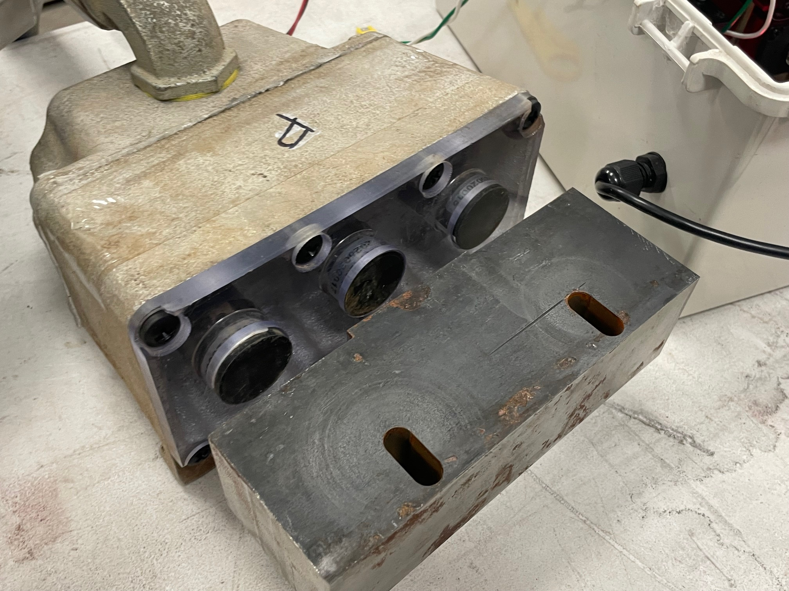

System Overview
2.1 Sensor Modules

The sensor modules consist of electromagnetic displacement sensors enclosed in a cast aluminum housing. They monitor the switch point position by electromagnetically detecting the presence and relative distance of the target plate. Each switch gap detector system features two modules, one for each switch position.
- Sensor modules are always fastened to the stock rail
- Modules are hardwired to the controller via electrical conduit
- Modules must be position adjusted and calibrated before use
2.2 Target Plates
Target plates are specially designed steel plates that trigger a positive signal when in proximity of the sensor housing. Each system features two plates, one for each switch position.
- Target plates are always fastened to the switch rail
- Plates must be position adjusted before use
- Plates must be installed parallel to sensor modules
2.3 Controller
The controller includes the power supply, logic circuitry, communication systems, and diagnostic tools. Housed in a weathertight electronics enclosure, it features on-board buttons and a readout LCD for first-time setup or troubleshooting.
- Push buttons located on the controller board enable calibration mode
- Calibration mode allows manual adjustment of the sensors' target distance
- The readout LCD provides real-time distance sensor feedback for gap calibration
- Entering calibration mode changes the status light behavior from blinking to a continous state for postion feedback
2.4 Status Light
The status light sits atop a pole attached to the controller housting. It provides visual feedback that the switch is either closed or open/gapped by blinking either red or green during standard operation.
- A red light indicates the switch is gapped or open. If the switch is not actively being thrown, a red light indicates a switch gap exceeding safe tolerances
- A green light indicates that the switch is closed in either position, within a safe tolerance of the user-calibrated positon
- In calibration mode, the light will shine continuously to provide real-time distance feedback